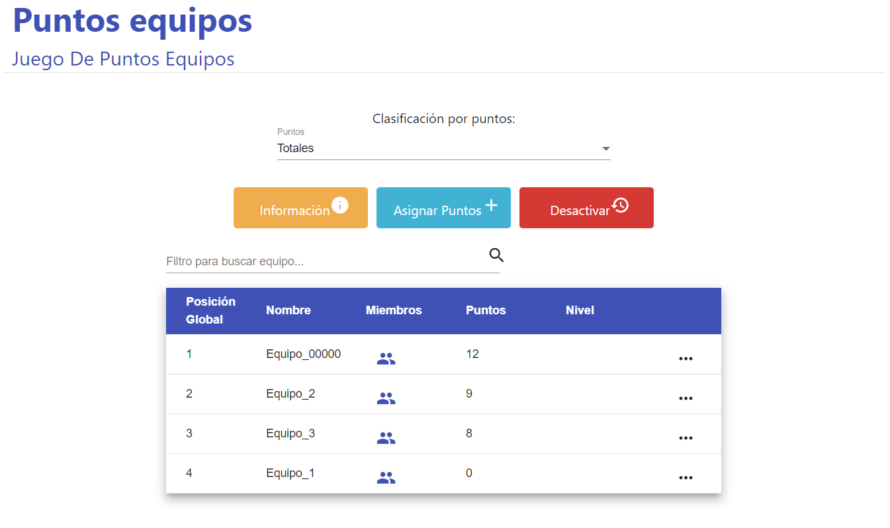

Cualquiera de los juegos que Classpip tiene disponibles para sus usuarios está disponible para
jugarlo de forma individual o en equipos, los cuáles pueden ser generados por el profesor o de
manera aleatoria usando la aplicación
JUEGO DE PUNTOS
En este tipo de juego el profesor asignarà puntos a sus alumnos en función de sus méritos
(puntualidad, calificaciones, buen trabajo en equipo, apoyo a compañeros... ) y se los quitará en
función de sus deméritos (malas calificaciones, llegar tarde, pelearse con un compañero, no prestar
atención...). A medida que los alumnos van acumulando puntos, ascienden en el ranking de puntos,
obteniendo diferentes privilegios según alcanzan diferentes niveles de puntuación (poder escuchar
música durante el examen, llevarse a casa durante el fin de semana la maleta de cosas interesantes
de la profesora...)

JUEGO DE COLECCIÓN
En este tipo de juego, el alumno colecciona diferentes cromos de una colección concreta, la cual
puede ir variando según la asignatura o el tema que se esté tratando en ese momento (filósofos,
músicos, comandos informático...) y una vez completada la colección, esta te muestra algún tipo de
información relevante de cara a la asignatura (la obra de algún filósofo, una partitura, el código
de un programa...). El profesor podrá ir asignando paquetes de cromos a sus alumnos según sus
méritos en clase.
JUEGO DE AVATARES
En este juego los alumnos construyen sus avatares a partir de diferentes sets que contienen una
silueta y varios complementos (ojos, boca, nariz, orejas... ). Una vez el alumno ha formado su
avatar, puede, además, grabar un mensaje de voz que el profesor podrá reproducir. Este juego es muy
útil para clases dónde se busque la intervención de los alumnos, mediante el uso de los mensajes de
voz grabados.
JUEGO DE CUESTIONARIO
En el juego de cuestionario el profesor prepara una batería de preguntas, las cuales pueden ser
cualquier temática y de cualquiera de los 4 tipos que hay: Verdadero o Falso, Cuatro Opciones, Respuesta
Abierta y/o Emparejamiento. Una vez preparado el cuestionario con todas las preguntas que el profesor haya
querido meter, define un tiempo límite para poder responder cada pregunta. Una vez iniciado el
juego, el profesor será el encargado de ir lanzando las preguntas, que los alumnos irán recibiendo y deberán
contestar, no solo de forma correcta, sino también en el menor tiempo posible, ya que los más
rápidos
respondiendo correctamente son los que obtendrán más puntos.
JUEGO DE CUESTIONARIO DE SATISFACCIÓN
El juego de cuestionario tiene una variante, en la cual el profesor, en vez de preparar el
cuestionario mediante las preguntas disponibles en la batería de preguntas, prepara un
cuestionario de satisfacción/valoración, con preguntas en las cuáles se tiene que puntuar una
cualidad o un concepto del 1 al 5 (1 siendo la nota más baja y 5 la más alta), o preguntas de
respuesta abierta dónde lo que se pide es la opinión del alumno con respecto a algún concepto
en concreto.